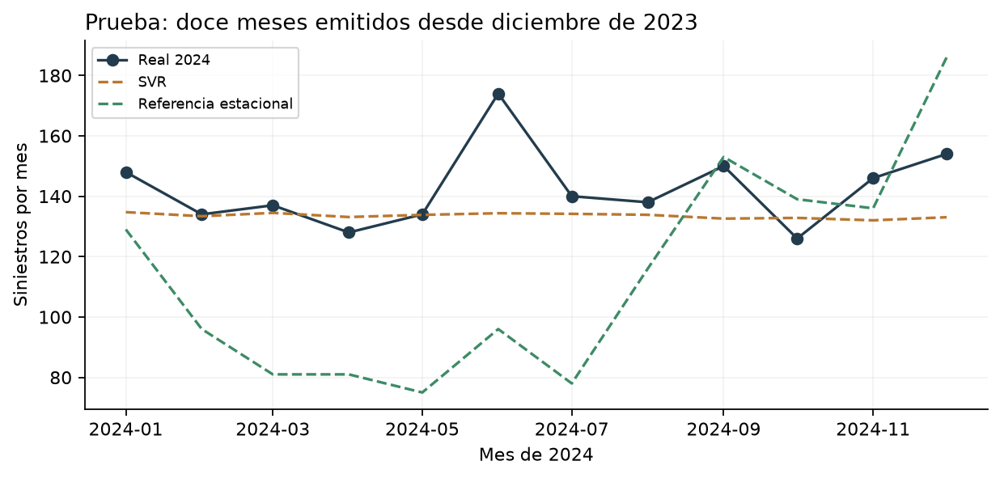

Proyecto integrador · 31 de octubre de 2026
Pronóstico mensual de siniestros en Paraguay
Tres fases calculadas con 108 meses de datos publicados por el INE, con fuente Patrulla Caminera. Alan Alcaraz, Leandro Ferreira y Jorge Rios.
Resultado principal: SVR fue elegido por validación temporal. En 2024 obtuvo MAE 10,87 y RMSE 15,32 siniestros por mes; su R² fue −0,477. Mejora las referencias operativas, pero sus predicciones casi planas no anticipan bien los picos.
Leer las tres fases
Cómo le fue al aprender y pronosticar
MAE: accidentes de error medio por mes; menor es mejor. El ajuste de entrenamiento es a un paso con antecedentes reales; validación y prueba son a doce pasos. Las columnas no representan exactamente el mismo escenario.
| Familia | MAE ajuste | MAE validación | MAE prueba | R² prueba |
|---|
| SVR | 23.06 | 24.08 | 10.87 | -0.477 |
| Ridge | 18.36 | 26.24 | 10.67 | -0.182 |
| Random Forest | 12.59 | 30.44 | 32.61 | -6.667 |
| ETS | 20.19 | 31.00 | 31.30 | -6.145 |
| Referencia media12 | 26.46 | 31.47 | 28.58 | -5.141 |
| Referencia estacional | 38.85 | 37.23 | 36.58 | -10.718 |
Random Forest ajusta mejor el entrenamiento y generaliza peor. Ridge consigue un error de prueba ligeramente menor que SVR, pero no se cambia la elección después de observar prueba.

Material adicional
Alcance de la proyección
La evaluación es retrospectiva sobre 2024. La proyección posterior al último dato corresponde a 2025 con corte diciembre de 2024; no es un pronóstico actualizado de 2027. La banda empírica es orientativa y no garantiza cobertura futura.
Asistencia de IA declarada en los informes. La consigna reserva al grupo la revisión y adopción de decisiones metodológicas e interpretación. Faltan los legajos. No se enviaron archivos a terceros.